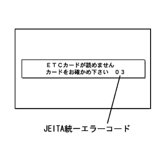

JEITA Standard Error Codes
To facilitate handling and processing when the toll collection (ETC) computer assembly malfunctions, for ETC users and expressway claim counters (toll gates, etc.), JEITA (Japan Electronics and Information Technology Industries Association) has established JEITA unified error codes that immediately indicate the malfunction. The toll collection (ETC) computer assembly supports this JEITA unified error code notification.
- □ HINT □
- When a JEITA standard error code occurs, it is notified by an interrupt display on the multi-display.
The toll collection (ETC) computer assembly stores the latest 1 detected JEITA unified error codes in non-volatile memory. These can be checked by voice from the toll collection (ETC) computer assembly or on the multi-display. (see
 )
)
 |
Diagnosis Mode 1 (Error Log)
Up to 20 previously input DTCs are stored as an error log, and these can be checked by voice from the toll collection (ETC) computer assembly. (see
)